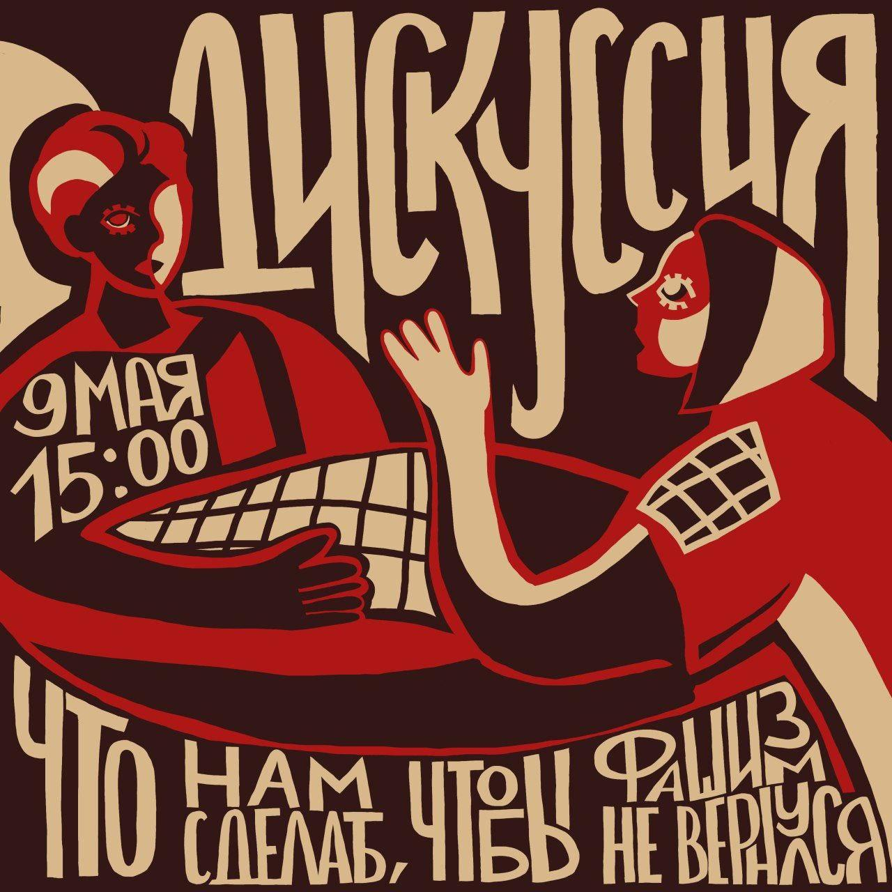

Вечер написания писем политическим заключёным 9 мая, 18:00
Благодоря новому витку репрессий в стране пополнился список политических заключённых. Когда тебя посадили за убеждения, очень хочется знать, что всё не зря, и чувствовать поддержку от товарищей и товарищек.
Мы приглашаем вас написать письма политическим заключённым в нашем пространстве. Если вы не умеете, не знаете что писать или просто стесняетесь - вам подскажут и поддержат.
Так же на мероприятии будет проходить сбор средств для местного “Анархисткого Чёрного Креста” (АЧК). Собранные деньги пойдут на оплату штрафов, адвокатов, на отправку писем и другой работы, которой занимается иркутская ячейка АЧК.

Дискуссия: что нам сделать, чтобы фашизм не вернулся?
09/05 15:00
Не хотелось бы скатываться в аналогии, которые всем так близки, но задать вопрос “что нам делать для того, чтобы он не вернулся” всё же стоит.
На дискуссии мы поговорим о том что такое фашизм, обсудим какие были предпосылки для него тогда, есть ли они сейчас и постараемся ответить на вышепоставленный вопрос.
До встречи в нашем пространстве 9 мая в 15:00